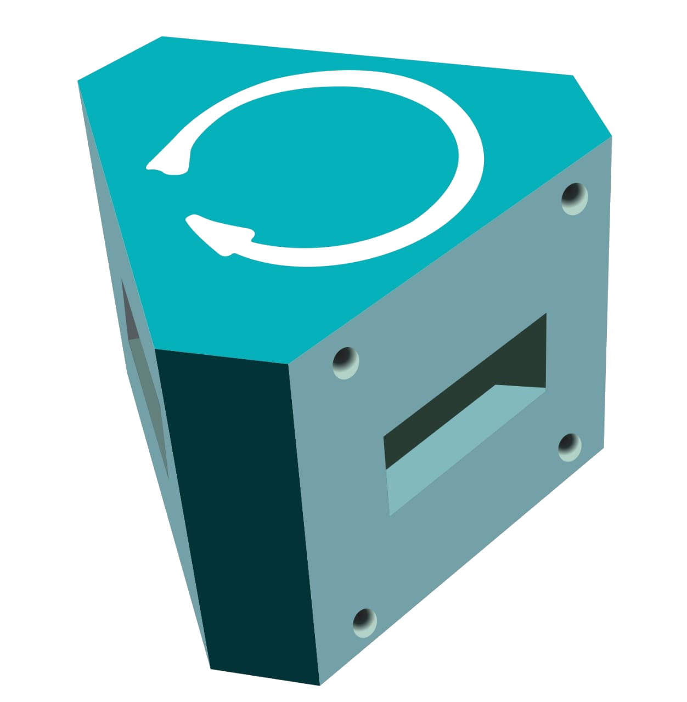

Theory
-
Circulator:
A circulator is a device that transports radio frequency or microwave signals from one port to another. They typically have three ports. They are made of magnets and ferrite materials with magnetic properties. Circulators can be made to circulate clockwise or counterclockwise. So the name "circulator" makes sense in that it transmits the signal around to the three ports. These devices are also referred to as duplexers because they allow the transmission of two signals over one channel. This allows a receiver and a transmitter to share the same antenna. This is the most common use for a circulator. When the transmitter sends a signal, the device directs the signal to the antenna port. So in summary, a circulator is a device that is designed to direct radio frequencies or microwave signals from Port 1 to Port 2 with a minimum loss. -
Isolator:
An isolator is a two-port device that transmits microwave or radio frequency power in one direction only. Due to internal behavior, the propagation in one direction is allowed while the other direction is blocked. The non-reprocity observed in these devices usually comes from the interaction between the propagating wave and the material, which can be different with respect to the direction of propagation. It is used to shield equipment on its input side, from the effects of conditions on its output side; for example, to prevent a microwave source being detuned by a mismatched load. -
Attenuator:
The attenuators are basically passive devices which control power levels in microwave system by absorpsion of the signal. Attenuator which attenuates the RF signal in a waveguide system is referred as waveguide attenuator. There are two main types fixed and variable. They are achieved by insertion of resistive films. -
Magic-Tee:
A magic tee (or magic T or hybrid tee) is a hybrid or 3 dB coupler used in microwave systems. It is an alternative to the rat-race coupler. In contrast to the rat-race, the three-dimensional structure of the magic tee makes it less readily constructed in planar technologies such as microstrip or stripline. The magic comes from the way it prevents signals from propagating between certain ports under specific conditions. This allows it to be used as a duplexer; for instance, it can be used to isolate the transmitter and receiver in a radar system while sharing the antenna. In practical examples, it is used to both isolate circuits and mix signals, for instance in a COHO radar. -
Directional Coupler:
Directional couplers are passive devices used mostly in the field of radio technology. They couple a defined amount of the electromagnetic power in a transmission line to a port enabling the signal to be used in another circuit. An essential feature of directional couplers is that they only couple power flowing in one direction. Power entering the output port is coupled to the isolated port but not to the coupled port. A directional coupler designed to split power equally between two ports is called a hybrid coupler. Directional couplers are most frequently constructed from two coupled transmission lines set close enough together such that energy passing through one is coupled to the other. This technique is favoured at the microwave frequencies where transmission line designs are commonly used to implement many circuit elements. -
Horn Antenna:
A horn antenna or microwave horn is an antenna that consists of a flaring metal waveguide shaped like a horn to direct radio waves in a beam. Horns are widely used as antennas at UHF and microwave frequencies, above 300 MHz. They are used as feed antennas (called feed horns) for larger antenna structures such as parabolic antennas, as standard calibration antennas to measure the gain of other antennas, and as directive antennas for such devices as radar guns, automatic door openers, and microwave radiometers. Their advantages are moderate directivity, low standing wave ratio (SWR), broad bandwidth, and simple construction and adjustment. -
E-Plane TEE:
An E-plane TEE is a waveguide tee in which the axis of side arm is parallel to the E field of the main guide. If the collinear arms are symmetric about the side arms, there are two arm characteristics. When wave are fed into the side arms, the wave appear in the collinear arms will be in opposite phase and in the same magnitude. -
H-Plane TEE:
An H-Plane TEE is a waveguide TEE in which the axis of its side arm is shunting the E field or parallel to the H field of the main guide and attaching the another waveguide. -
Frequency Meter:
It is constructed from cylindrical cavity resonator with a variable short circuit termination. The shorting plunger is used to change the resonance frequency of the cavity by changing the cavity length. DRF measures the frequency directly. It is particularly useful when measuring frequency differences of small changes. -
Pin Modulator:
Pin Diode modulators offer an ideal way for amplitude and the pulse modulation of microwave signal through wide range of frequencies. These modulators utilize PIN Diode which are mounted across the waveguide line a R.F. isolated DC bias lead passing to an external TNC (F) Connectors.


.png)
.png)

.jpeg)